📑 Dans cette page (7 sections)
GitHub stocke le code ; il n'héberge pas le site (GitHub Pages ne gère que le statique). C'est Render qui exécute le site à partir de ton dépôt.
🧰 Avant le premier envoi
- Vérifie que
.gitignorecontient.env,.venv/,uploads/*,scp_site.db*. - Ne mets jamais de secret dans le code.
🆕 Créer le dépôt
github.com → New repository → nom scp-foundation, Private recommandé, sans README ni .gitignore initiaux.
📤 Premier envoi
cd "C:\chemin\vers\scp_public"
git init
git add .
git status # .env et .venv NE DOIVENT PAS apparaître
git commit -m "Version publique"
git branch -M main
git remote add origin https://github.com/TON-PSEUDO/scp-foundation.git
git push -u origin main
Au premier push, une fenêtre d'authentification GitHub s'ouvre. En cas de refus, crée un Personal Access Token (Settings → Developer settings) et utilise-le comme mot de passe.
♻️ Mettre à jour le site
%%{init: {"theme":"base","themeVariables":{"primaryColor":"#0f2130","primaryTextColor":"#e6eef5","primaryBorderColor":"#5fd0ff","lineColor":"#3d89ab","secondaryColor":"#1a0d14","tertiaryColor":"#0b1824","edgeLabelBackground":"#0f2130","fontFamily":"ui-monospace, Menlo, Consolas, monospace","noteBkgColor":"#1a0d14","noteTextColor":"#ffb4bb","actorBkg":"#0f2130","actorBorder":"#5fd0ff","actorTextColor":"#e6eef5","signalColor":"#3d89ab","signalTextColor":"#3d89ab","labelBoxBkgColor":"#0f2130","labelTextColor":"#e6eef5","loopTextColor":"#3d89ab"}}}%%
flowchart LR
A["💻 Ton PC"] -->|"git push"| B["🐙 GitHub"]
B -->|"webhook"| C["☁️ Render"]
C --> D["🔨 Build : pip install"]
D --> E{"✅ /healthz répond ok ?"}
E -->|"oui"| F(["🟢 Nouvelle version en ligne"])
E -->|"non"| G(["🔴 Ancienne version conservée"])
class F ok
class G bad
classDef cloud fill:#0f2130,stroke:#5fd0ff,color:#e6eef5
classDef ok fill:#0c241b,stroke:#5dffb0,color:#e6eef5
classDef bad fill:#241219,stroke:#ff4d5e,color:#ffb4bb
git add .
git commit -m "Description du changement"
git push
Si Render est en déploiement automatique, chaque push sur main redéploie le site.
🚨 Si un secret a été publié par erreur
🚨 Danger
Un secret poussé sur GitHub doit être considéré comme compromis, même dans un dépôt privé : fais d'abord un Reset, nettoie ensuite.
- Reset immédiat du secret concerné (Discord, mot de passe Supabase, clés R2).
- Retire-le de l'historique si possible (
git filter-repo) ou recrée le dépôt. - Un secret poussé est compromis, même dans un dépôt privé.
✅ Bonnes pratiques
- Messages de commit clairs, un changement logique par commit.
- Branche
devpour les essais, fusion dansmainquand c'est stable. - Ne versionne ni les médias ni la base.
📚 Utiliser GitHub comme wiki gratuit
- Option 1 (recommandée) : garder le dossier
docs/dans le dépôt (liens relatifs.mdprêts). - Option 2 — Wiki GitHub : le dossier
wiki/est déjà prêt (liens sans.md, barre latérale_Sidebar.md, pied de page_Footer.md, images dansassets/). 1. Sur GitHub, onglet Wiki → crée une première page vide (cela initialise le wiki). 2. Clone-le :git clone https://github.com/TON-PSEUDO/scp-foundation.wiki.git3. Copie tout le contenu du dossierwiki/dedans, puisgit add . ; git commit -m "Wiki" ; git push.
Les bannières et boutons animés sont des fichiers SVG : si une image ne s'affichait pas dans le wiki, passe par l'option 1 (dossier docs/), qui fonctionne partout.
- Option 3 — GitHub Pages (vrai site web du wiki) : le dossier
docs/contient déjà les pages HTML générées (thème sombre, menu latéral, diagrammes, encadrés). 1. Dépôt public requis sur l'offre gratuite de GitHub (Pages sur dépôt privé demande un plan payant : vérifie les conditions actuelles). Si tu veux garder le code privé, crée un petit dépôt publicscp-foundation-wikiqui ne contient que le dossierdocs/. 2. Envoie le dépôt (git push), puis : Settings → Pages → Build and deployment → Source : Deploy from a branch → Branch :main→ dossier/docs→ Save. 3. Après 1 à 2 minutes, le site est surhttps://TON-PSEUDO.github.io/scp-foundation/. 4. Après chaque modification d'une page.md:pip install Markdownpuispython tools/build_site.py, et commit des fichiers.htmlmodifiés.
Le fichier docs/.nojekyll désactive Jekyll (sinon GitHub réécrirait les pages). Les diagrammes sont dessinés par Mermaid chargé depuis le CDN jsDelivr, et les badges viennent de shields.io : une connexion internet est nécessaire pour les voir.


◀ 🔐 Connexion Discord · 🚀 Déploiement Render ▶

⛨ SCP Foundation — projet de fan non officiel · contenus SCP sous licence CC BY-SA 3.0 lorsque applicable · ⬆ retour en haut